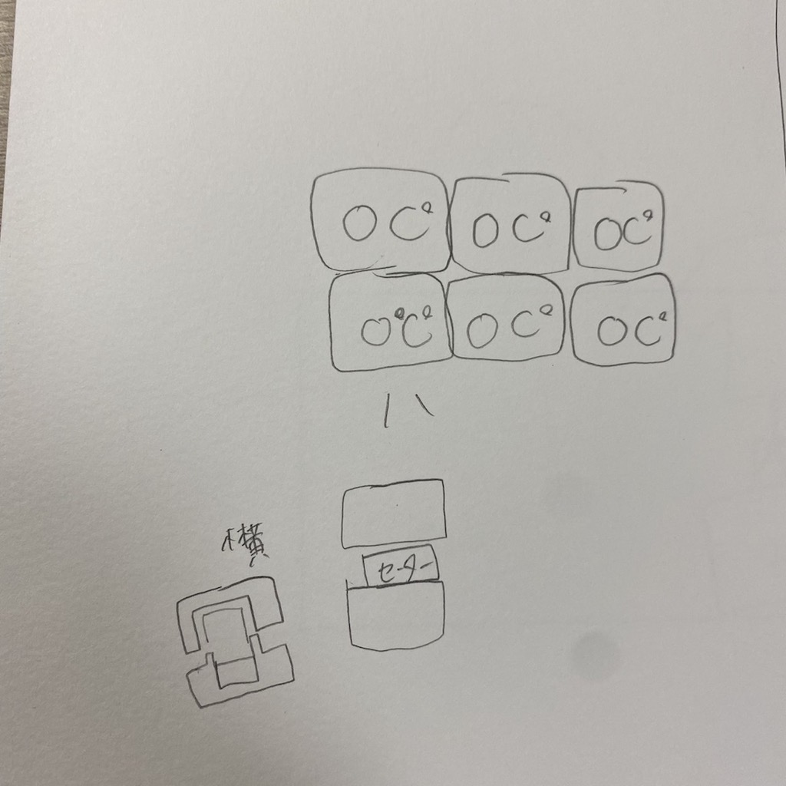
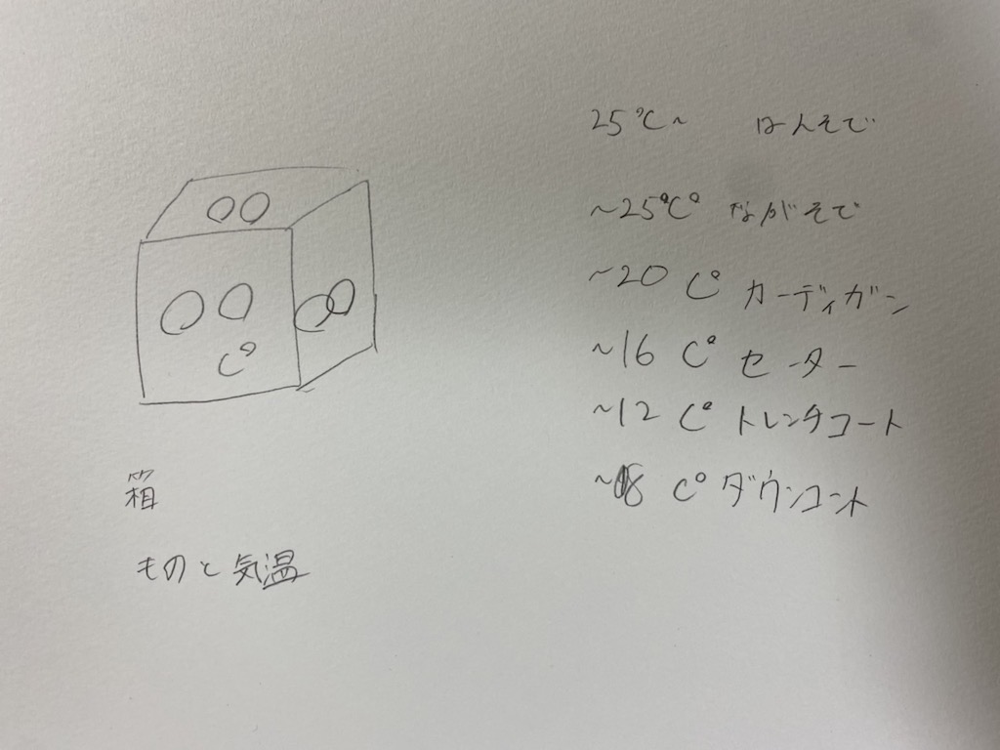
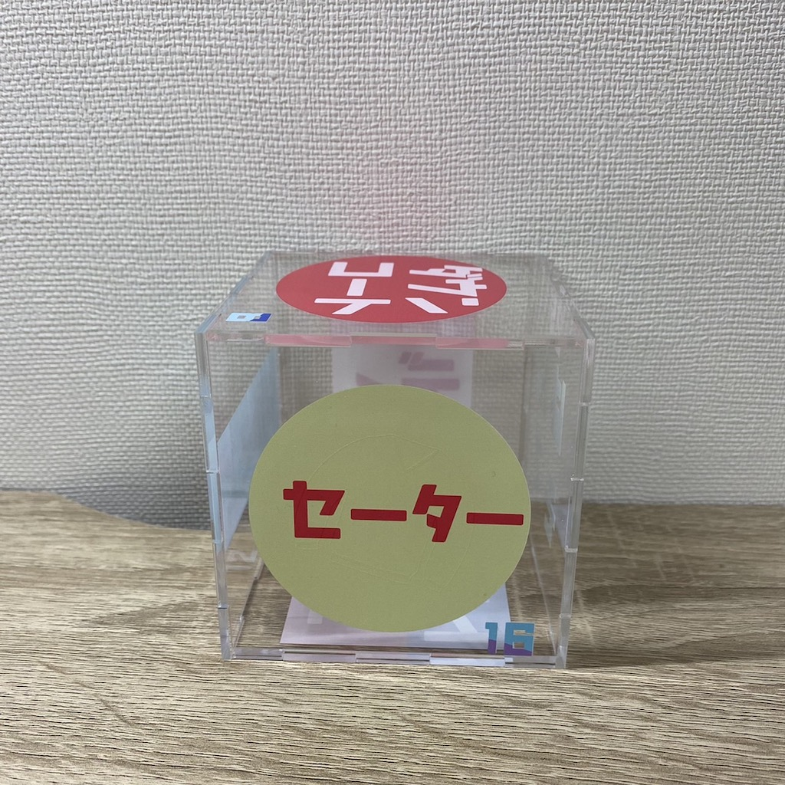
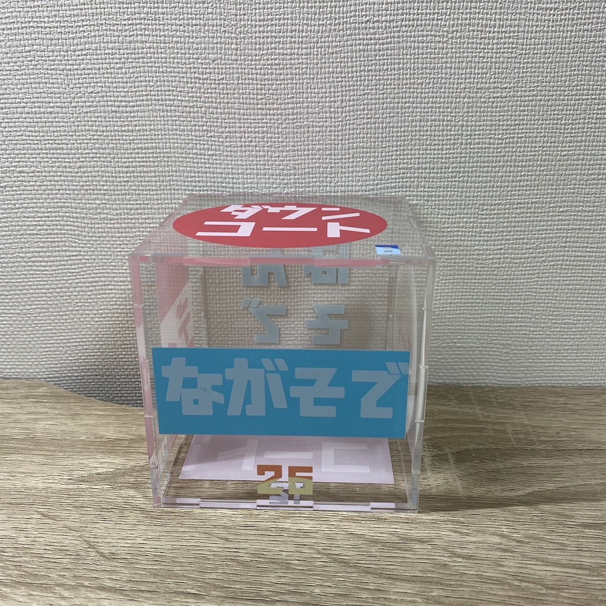
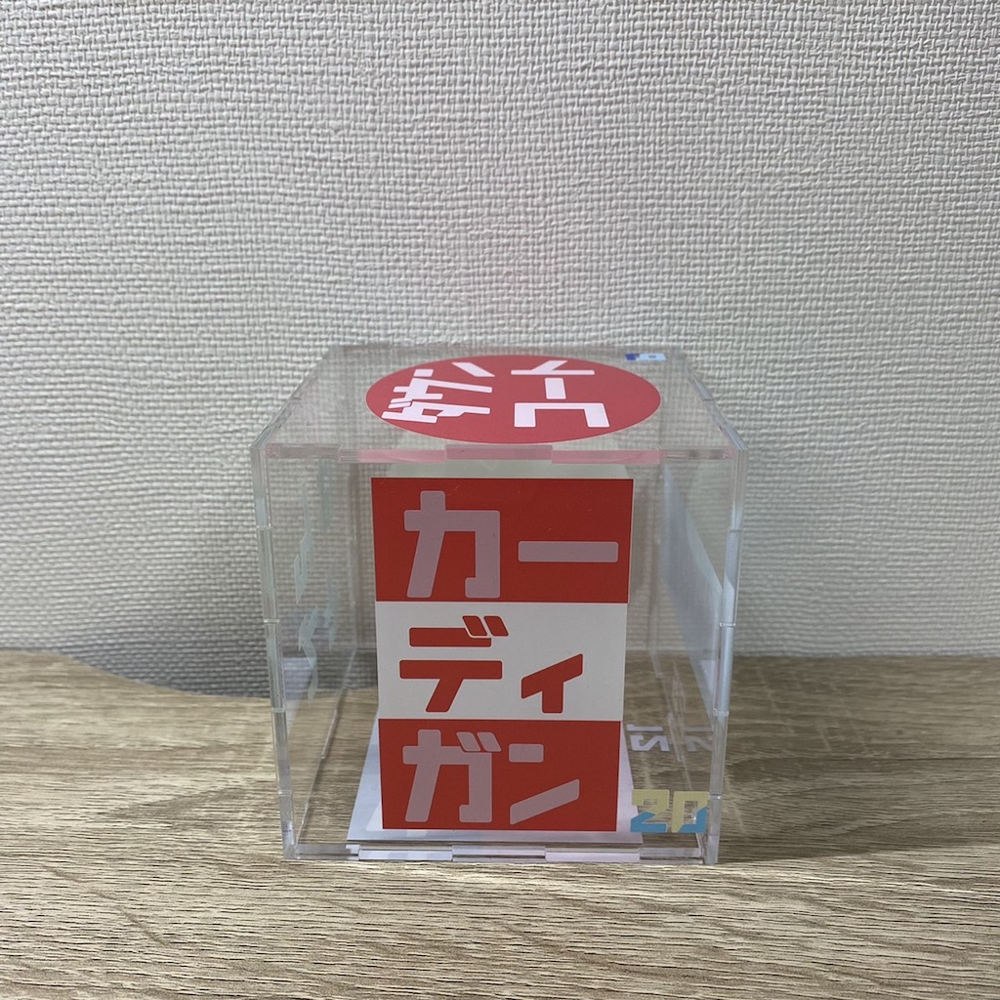
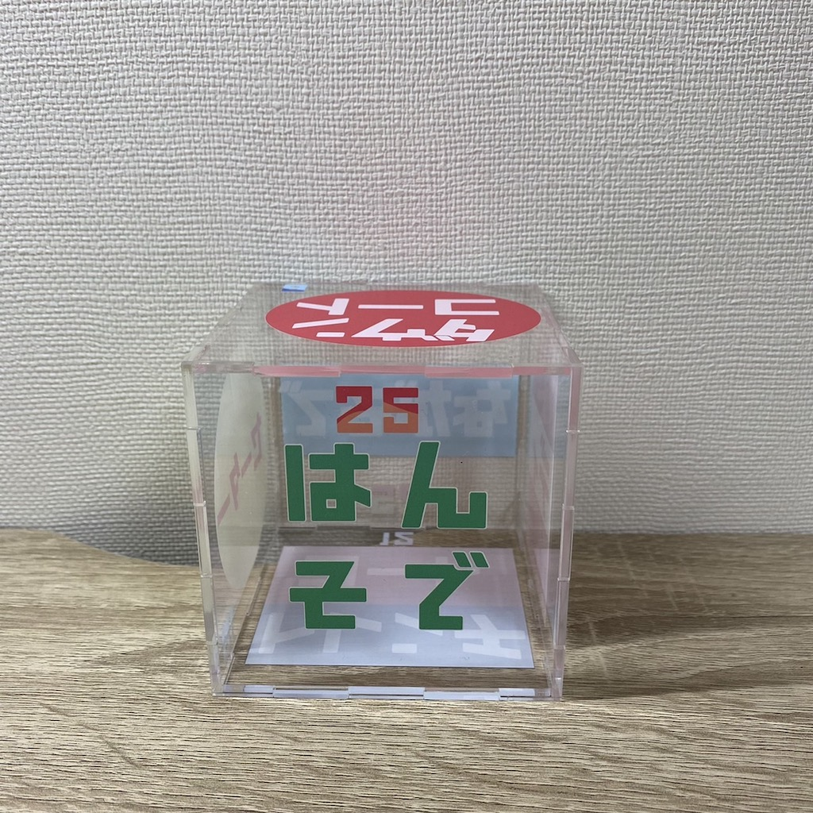
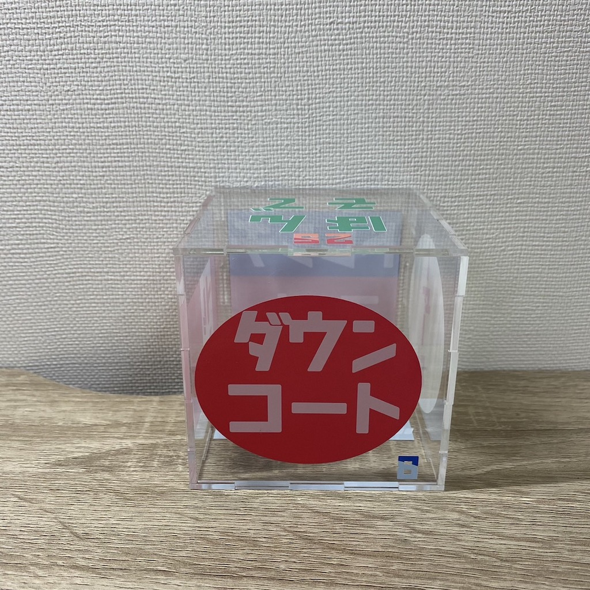
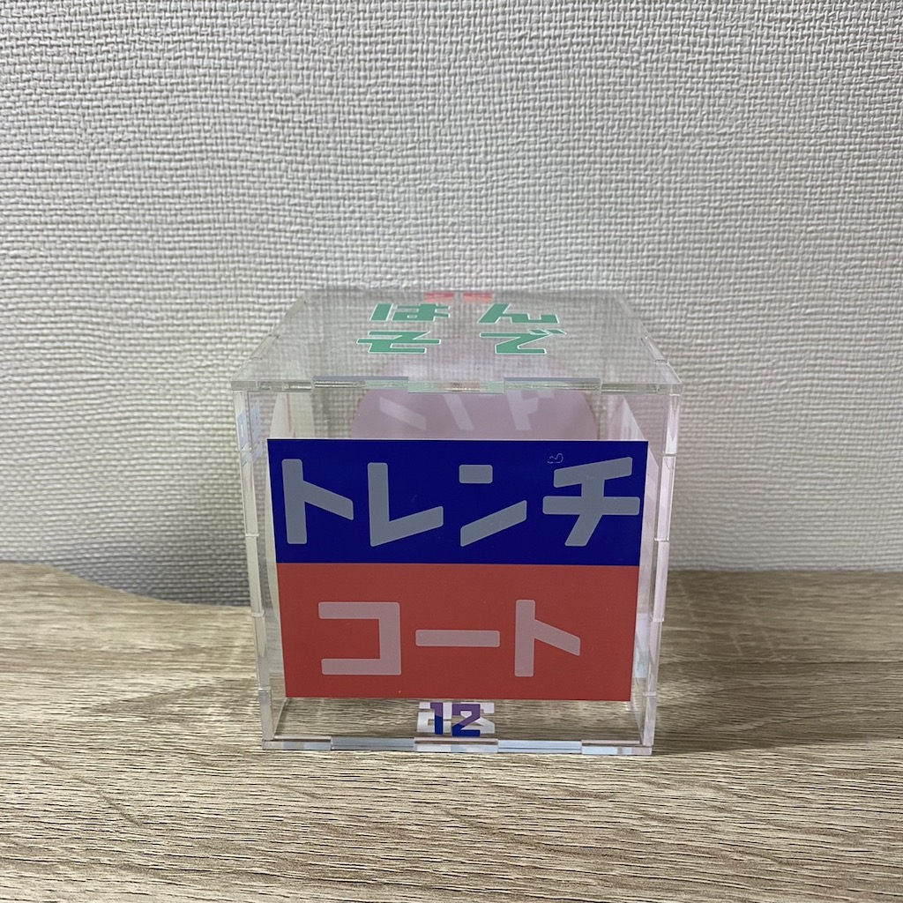
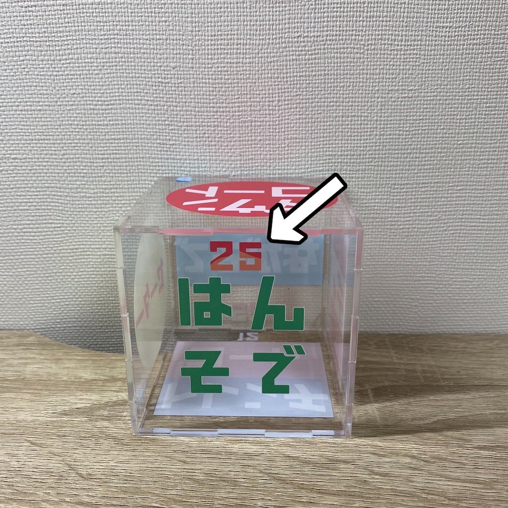
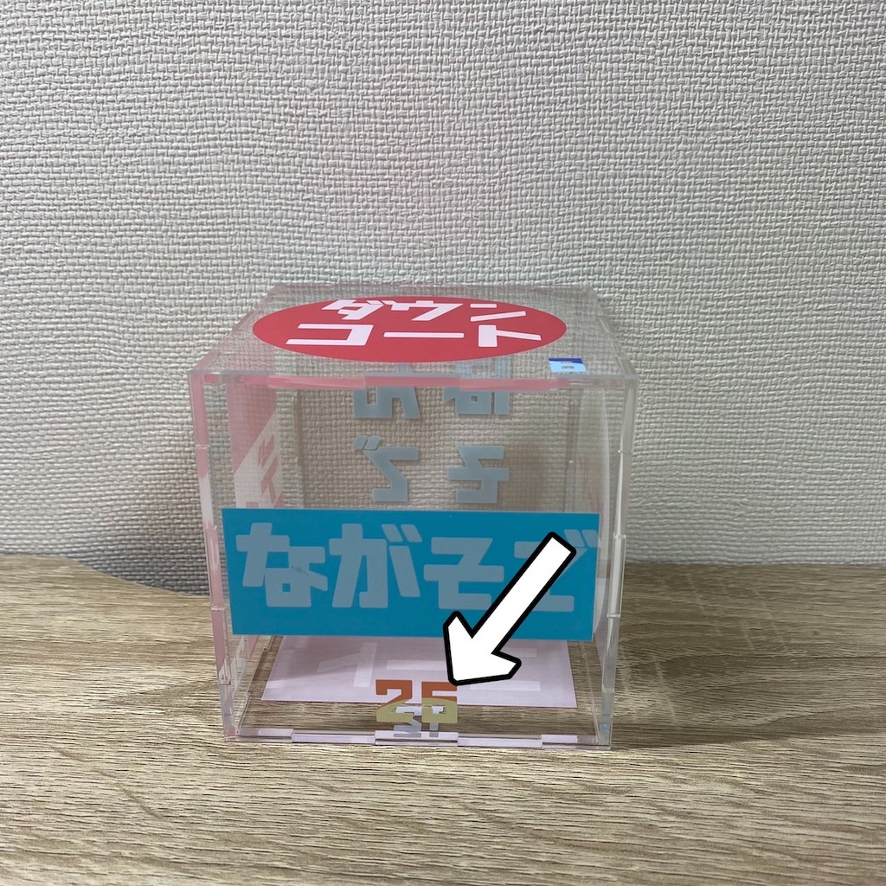

Design for Others
前回の課題
第４回 プロトタイプ&ドキュメンテーション
構想スケッチ

最初の段階では３Dプリンターで気温が書いてあるカプセルを作りその中にその気温に対応する服装を入れようと考えた。
しかし、これだと手間がかかる、バラバラなのでなくしてしまう問題があるのではないかと考えた。
そこで二つ目の案である。

箱型にし、そこに服装と気温の情報を書けば見やすいしスペースも取らず失くすなどの問題も起きないと考えた。
作品







作品の説明
この作品はその日の気温を調べその気温に合わせて置いておくことでその日に何を着ればいいのか一眼でわかることができます。
気温は数字が上にあると○度以上。下だと○度以下です。


左 ２５度以上 右 ２５度以下
リビングなどに置いておくと字が大きくて見やすいので便利だと思います。
使用機材
班のメンバーの作品
金曜日にあげます。すいません。
前の画面へ